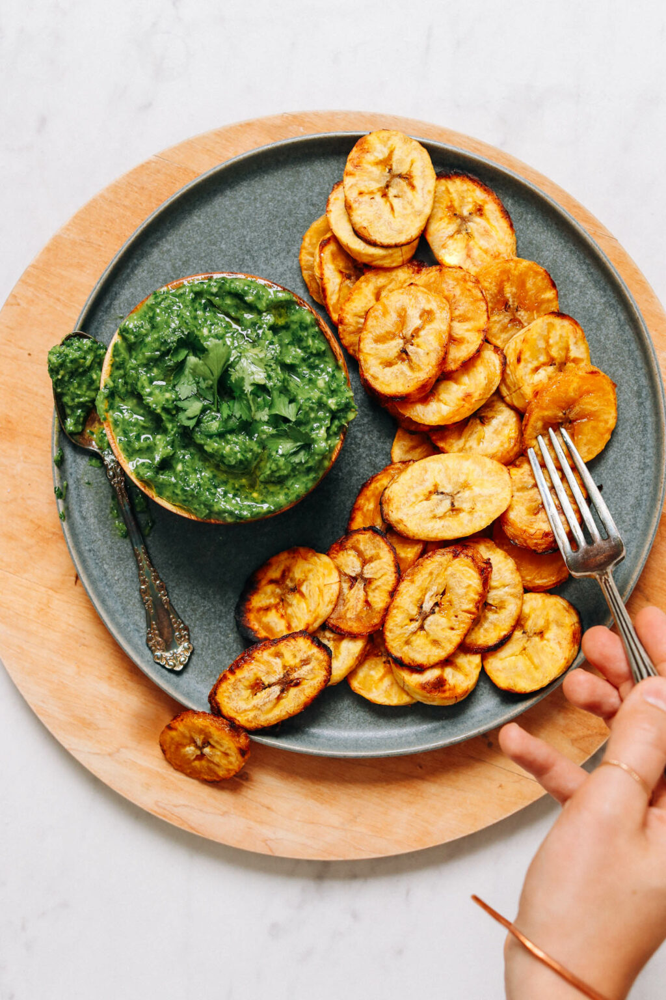
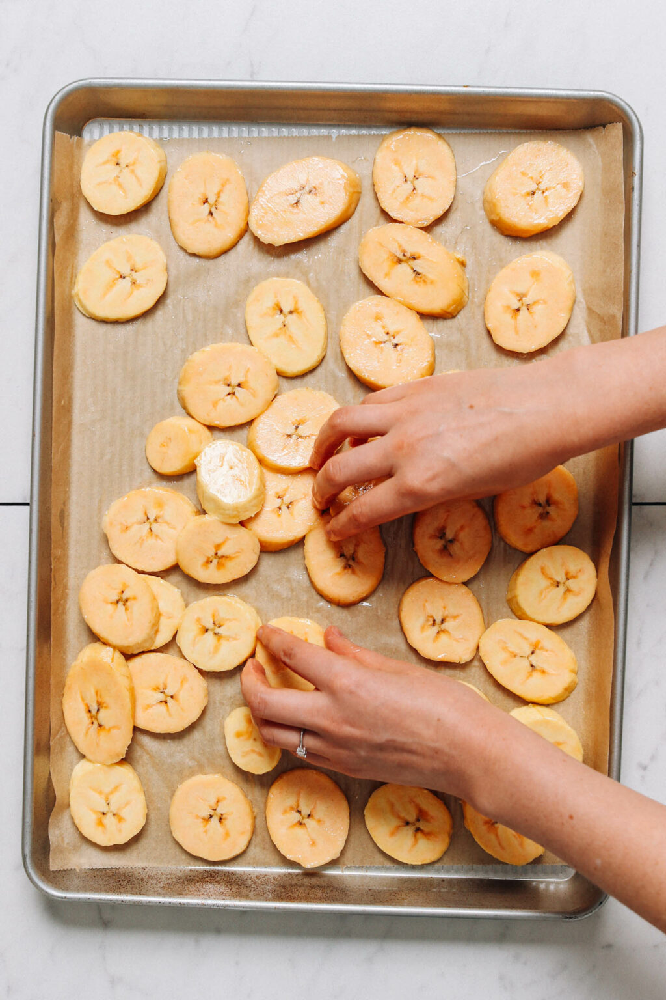

Roasted Plantains"Ogede"

Perfectly Cooked Plantains that will have you Coming Back for More
If you know anything about plaintains, you know that they are
the best thing in the world. Not only are they packed with nutrients,
but they are naturally sweet and really addictive.

To enhance the sweetness of the plantains you can add a pinch of salt or paprika for a little spice
Ingredients
- 2 ripe plantains
- 1 Tbsp melted coconut oil
- 1 healthy pinch sea salt
Instructions
- Preheat oven to 425 F (218 C) and line baking sheet with parchment paper.
- Remove peel from plantains and slice the platain on an angle into 1/4 inch slices.
- Place sliced plantains on prepared baking sheet and toss with oil and salt.
- Bake for 10 minutes, then flip and bake for another 5-10 minutes or until gold and slightly caramelized.